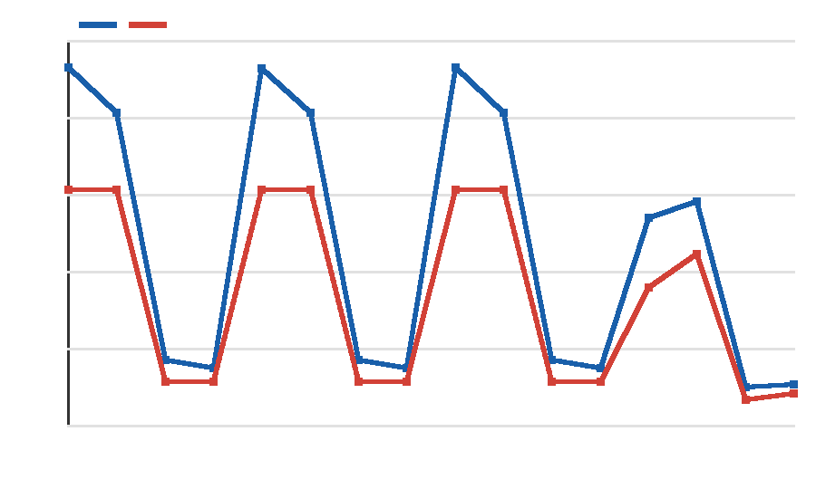
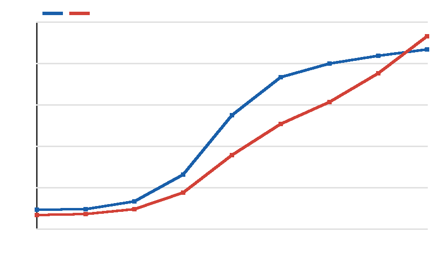
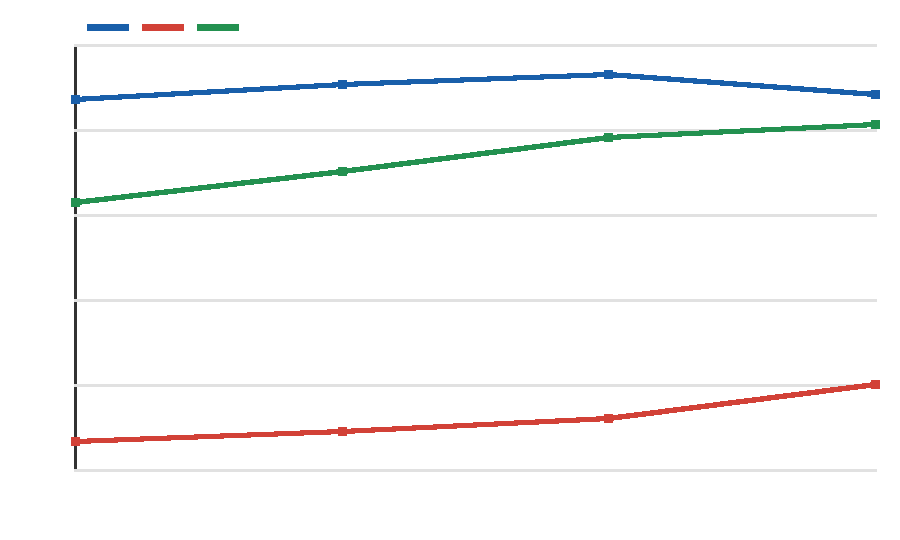

Dharma and Daoist Concepts in Decision Theory: Computable Bridges, Boundaries, and a Falsified T1 Threshold
Macheng Shen (research initiator), in collaboration with an AI research assistant
1. Plain-language conclusion
It is intuitively tempting to understand “enlightenment” as knowing more and more, but more complete knowledge does not automatically loosen attachment. The more defensible H-Bridge says that increased understanding can reduce inner conflict only when a model can also see its own limits and allows knowledge that “some things are uncontrollable” to revise existing preferences. The part of wu wei most amenable to formalization is using the environment’s own dynamics and applying only the necessary control at critical points—not doing nothing. The unity of knowledge and action can be divided into three researchable layers: perception and action share an objective; skilled action is distilled from planning; and some causal knowledge can be acquired only through intervention. The toy experiments support the H-Bridge’s conditional interaction and a trade-off at moderate self-precision, but those successes belong only to the models specified in advance. By contrast, the wu-wei experiment did not meet its preregistered success threshold, so its attractive energy-saving result cannot be presented as validation. Mathematics can clarify structure and generate counterexamples, but it cannot define “pure awareness,” the moral source of conscience, complete intentionlessness, or existential suffering. The formalization here should be treated as a testable map, not as religious experience or the traditions themselves.
2. Concept-by-concept correspondence
| Traditional concept | Formal object | Strength | Main distortion |
|---|---|---|---|
| Wu wei | LMDP: reweight passive dynamics by desirability, pricing control deviation with KL | strong control problem | Still presupposes an objective function and cannot express “letting go even of the objective” |
| Unity of knowledge and action | Control as inference; planning distillation; the causal difference between observation and intervention | strong to partial | Captures structure but loses conscience, mind-as-principle, and moral motivation |
| Enlightenment | Task-relative world-model error, preference precision, and its updateability | partial | “A complete model is enlightenment” is too strong; knowledge can also intensify conflict |
| No-self | A latent self-variable and its precision (gamma_{self}) | partial | Reducing rigid priors is not realizing no-self, nor is it deleting the agent |
| Attachment, craving, and suffering | High preference precision and persistent risk terms in uncontrollable situations | partial | Can only approximate the conflict of frustrated desire; cannot exhaust aging, illness, death, or pervasive conditioned suffering |
| Emptiness | Model classes, coarse-graining, and statistical non-identifiability | rhetorical to partial | Engineering-level “lack of intrinsic essence in representations” cannot replace Madhyamaka argument; this formalization is itself not an ultimate description |
| Dependent origination | Structural causal models and interventional distributions | partial | Fixes variables and causal edges and cannot carry all the ethical and ontological meaning of dependent origination |
| Calm and insight, meta-awareness | Second-order inference over the allocation of attentional precision | partial | A computational proposal, not a confirmed neural mechanism of meditation |
| Sudden and gradual awakening | Continuous evidence accumulation and a discrete flip in the MAP model | partial | Does not include liberation, ethical transformation, or lineage recognition |
| Middle Way | A Pareto frontier under explicit objectives | rhetorical to partial | Not a midpoint parameter value or generic compromise |
| The Dao follows what is natural; highest goodness is like water; reversal is the movement of the Dao | Generative processes, compliant control, and negative feedback | rhetorical | Without independent predictions, these are merely renamings in modern terminology |
3. The enlightenment tension: A / B / Bridge and T3
H-A: epistemic completeness
The more thorough the exploration and the more accurate the model, the lower the conflict. The problem is that factual knowledge does not determine preferences: knowing more accurately that a bad outcome is unavoidable may make fixed attachment more painful.
H-B: release of attachment
Reducing attachment itself is sufficient to lower conflict, independent of increased understanding. The problem is that if one cannot see one’s own impulse to control and its consequences, preferences are difficult to revise in a targeted way.
H-Bridge: conditional bridge
Increased understanding leads to release only when both bridge factors are present: the model can represent its own modeling and control limits; and preferences can be updated by evidence of uncontrollability.
In a generative toy experiment with 16 conditions and 800 runs per cell, T3 shows a clear interaction: under the complete bridge, high exploration changes distress by −1.509; without the bridge, the change is +4.369; the difference-in-differences is −5.878. The prespecified kill condition—an exploration-effect difference of less than 1 inside versus outside the bridge—was not triggered. This counts against the unconditional sufficiency of H-A and supports the distinguishable structure of H-Bridge within this model; because the mechanism was written into the model according to H-Bridge, the result is not independent validation of a real psychological mechanism.

4. Wu wei: LMDP and T1’s negative result
A linearly solvable Markov decision process writes the cost at each step as a state cost plus a KL cost for deviation from passive dynamics:
This yields a precise, weak engineering version: good control does not reduce action to zero; it reweights the natural flow and concentrates control where it genuinely changes reachable outcomes. It can distinguish compliant control, random drift, and sustained brute force.

5. Three layers of the unity of knowledge and action
- Unified objective: active inference places state estimation and action selection within the same optimization objective. “Knowledge” and “action” constrain each other computationally rather than forming completely independent sequential modules.
- Amortized distillation: a slow planner produces a policy, which is then distilled into a fast parametric policy. Repeated practice compiles explicit deliberation into fluent skill, explaining the difference between “knowing how to do it” and “being able to do it.”
- Interventional knowledge: under confounding, observation (P(Y\mid X)) generally cannot identify the intervention (P(Y\mid do(X))). Some causal knowledge must therefore be acquired through action; this is a rigorous weak version of “knowing without acting.”
These three layers do not formalize what Wang Yangming called conscience. They describe unified control, skill formation, and causal identification; they neither prove that moral knowledge is innate nor derive “mind is principle” from performance metrics.
6. T2: the commitment–recovery trade-off in self-precision
T2 scans (gamma_{self}\in\{0,0.35,1,3\}) in a POMDP whose rules change. Moderate precision at (gamma_{self}=1.0) produces the highest total return, 40.029: when precision is near zero, recovery is fast but sustained commitment is harder to form; when precision is high, commitment is strong but recovery after the rule reversal is slow and cumulative risk is higher. The preregistered kill condition—the endpoint return is highest, or precision affects neither recovery nor commitment—was not triggered.
futile_control_rate equals 1 under every condition because an action must still be chosen at each step during the uncontrollable phase. This metric has degenerated and has no discriminative power; the conclusion depends only on cumulative risk, recovery, commitment, and total return.
7. Where formalization breaks
- Awareness itself: equations can describe attended contents and how attentional resources are allocated, but they do not explain why experience exists.
- The moral ontology of conscience: priors can encode preferences, but an inferential framework alone cannot explain why moral law is valid or where it comes from.
- The intentionlessness of wu wei: every control model presupposes an objective; “pursuing an objective efficiently” is not “falling away from the objective itself.”
- The full spectrum of suffering: risk terms can simulate conflict between desire and uncontrollability, but cannot compress conditioned suffering, aging, illness, death, or existential dissatisfaction into one prediction error.
- Emptiness’s reflexive constraint on descriptive language: statistical non-identifiability is only an analogy; elevating information or models into ultimate entities would itself become an object of critique.
- Differences within the traditions: Buddhist traditions do not offer one answer about the relation between awakening and omniscience; neither the sudden–gradual debate nor Laozi, Zhuangzi, and later Daoism can be unified by one learning curve.
8. Disagreements between the two analyses, and the general governance question
On “emptiness”
One analysis treats model dependence, coarse-graining, and non-identifiability as a partially operational correspondence; the other emphasizes that this remains an epistemic analogy, and that Madhyamaka would go on to question whether “information” itself has ultimate standing. The merged position is that the engineering correspondence is usable, but its strength must not exceed “partial,” and it cannot be used to establish a new substantialism.
The blind spot in “wu wei”
The formal draft highlights the strong mathematical structure and killable experiment of an LMDP; the critical draft emphasizes that its objective function never disappears. The merged position is that the correspondence is strong for “control that deviates less from natural dynamics,” but only partial or rhetorical for intentionlessness, spontaneity, and political ethics in the classical context.
Tight coupling does not imply concentrated power
Tight perception–action coupling within an individual or single system is a design for rapid information return; concentrating perception, judgment, execution, and review in the same node of organizational governance weakens correction and accountability. The two can coexist, but layer boundaries must be explicit: the execution loop can be tight while authorization and verification remain separate; a locally unified objective cannot automatically justify institutional centralization.
9. Falsifiable predictions
- Wu-wei control: if the objective aligns with a natural attractor, there should be a high-success, low-KL control point, with control cost concentrated near the barrier. T1 failed because its 0.927 success rate did not reach 0.95.
- Self-precision: moderate (gamma_{self}) should outperform both endpoints while showing a commitment–recovery trade-off; if an endpoint is best or neither readout changes, the operationalization fails. T2 has not yet triggered this condition.
- H-Bridge: exploration’s effect in reducing conflict should depend on “preferences are updateable” and “the model includes its own limits” holding simultaneously; if the effect difference inside versus outside the bridge is less than 1, the design is not distinguishable. T3 has not yet triggered this condition.
- Interventional knowledge: in tasks with confounding, active interveners should have lower causal error than pure observers with equal samples; if there is no difference, the causal weak version of the unity of knowledge and action fails.
- Distillation: distillation after planning should reduce action latency while retaining transfer performance; if there is no speed benefit or transfer degrades substantially, the skill-layer mapping fails.
- Sudden–gradual mechanism: continuous evidence can accompany a discrete flip in MAP structure selection; if pure parameter learners show the same jump, or the structural model shows no threshold behavior, the explanation loses discriminative force.
- Meta-awareness: updateable second-order precision should recover calibration after a rule change faster than fixed attentional gain, without impairing discrimination during stable periods; otherwise the modeling proposal is weakened.
10. Do-not-claim list
- We do not claim that Buddhism, Daoist thought, or enlightenment has been proven by simulation.
- We do not claim that the free-energy principle solves the hard problem of consciousness, nor do we unconditionally equate variational free energy with thermodynamic free energy.
- We do not equate suffering with reward-prediction error, negative reward, or a single KL term.
- We do not equate no-self with deleting self-states, depersonalization, incapacity, or exemption from responsibility.
- We do not equate emptiness with nihilism, statistical uncertainty, or “everything is information.”
- We do not equate wu wei with inaction, a random policy, minimum energy consumption, or a particular temperature limit.
- We do not equate the Middle Way with setting a parameter to 0.5, nor sudden awakening with a neural-network phase transition.
- We do not equate the unity of knowledge and action with “act first, talk later,” still less treat tight coupling inside a system as justification for centralized authority.
- We do not equate conscience with a reward function, nor the Dao with a generative process or a Solomonoff prior.
- We do not promote toy experiments, engineering success, or attractor diagrams into ontological evidence.
- We do not claim that there is only one position within the traditions, nor that these bridges are novel without comparison.
11. References
Only entries that already had links in the two research drafts are listed. “Verified” retains the drafts’ verification labels; this synthesis did not revisit every external page. All others are marked “unverified.”
- Friston, K. (2010). “The free-energy principle: a unified brain theory?” Nature Reviews Neuroscience, 11, 127–138. DOI (verified)
- Todorov, E. (2007). “Linearly-solvable Markov decision problems.” NeurIPS 19. Proceedings (verified)
- Kappen, H. J. (2005). “Path integrals and symmetry breaking for optimal control theory.” JSTAT, P11011. arXiv (verified)
- Ortega, P. A., & Braun, D. A. (2013). “Thermodynamics as a theory of decision-making with information-processing costs.” Proceedings A. arXiv (verified)
- Leike, J., & Hutter, M. (2015). “Bad Universal Priors and Notions of Optimality.” COLT / PMLR 40. Proceedings (verified)
- Laukkonen, R. E., & Slagter, H. A. (2021). “From many to (n)one.” Neuroscience & Biobehavioral Reviews, 128, 199–217. PubMed (verified)
- Van Dam, N. T., et al. (2018). “Mind the Hype.” Perspectives on Psychological Science, 13(1), 36–61. PubMed (verified)
- Seth, A. K. (2013). “Interoceptive inference, emotion, and the embodied self.” Trends in Cognitive Sciences, 17, 565–573. PubMed (verified)
- Deane, G. (2020). “Losing Ourselves: Active Inference, Depersonalization, and Meditation.” Frontiers in Psychology. PMC (verified)
- Sandved-Smith, L., et al. Related work on meta-awareness and deep-parametric active inference. arXiv (unverified)
- Wang Yangming. Instructions for Practical Living and Other Neo-Confucian Writings, trans. Wing-tsit Chan (1963). Open Library (bibliographic record verified)
- Dao De Jing. Chinese Text Project (entry point verified; chapter versions still require separate checking)
- Early Buddhist text entry points: SN 12, SN 22.59, SN 56.11, and DN 22 (entry points verified; interpretations vary across traditions)